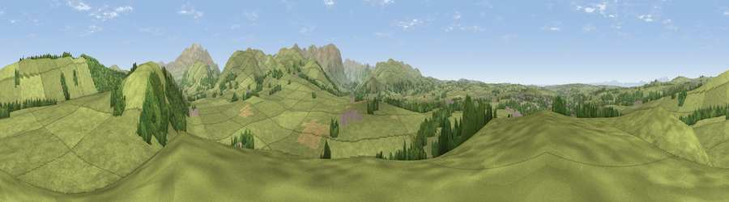

Slate Fell
#13188 in England · top 64% of its area beats it · near CockermouthThe view, rendered

A 360° render of this exact spot computed from the terrain model, tree cover and land cover — summer colours, afternoon light, calibrated against photographs of famous viewpoints. Real trees, hedges and buildings will differ in detail.
The panorama
Grey silhouette: terrain skyline in each direction (720 bearings, Earth curvature and refraction included). Dashed green: skyline with trees (+15 m) and buildings (+8 m) as obstacles. Blue strip: how far the ground is visible on each bearing.
Where the view opens
Wedge length = distance to the farthest visible ground on that bearing (vegetation-aware). Rings at 10, 25 and 50 km.
What fills the view
87% grassland · 9% woodland · 2% cropland · 1% built-up
Angular shares of the visible panorama (visual magnitude), not map area. Landscape diversity 0.21 (0–1 Shannon).
Key numbers
More beautiful places nearby
The staircase of upgrades: each row has a higher view potential than everything closer. Driving times are estimates from straight-line distance, calibrated against real road routing — check an actual route before setting out.
| Place | Direction | Drive | Score |
|---|---|---|---|
| Viewpoint near Embleton | NNE · 2 km | ~4 min | 74.8 |
| Viewpoint near Embleton | NNE · 2 km | ~5 min | 76.4 |
| Watch Hill (Setmurthy Common) | NE · 2 km | ~5 min | 77.4 |
| Viewpoint near Embleton | E · 5 km | ~11 min | 81.8 |
| Graystones | SE · 5 km | ~11 min | 82.8 |
| Viewpoint near Embleton | E · 6 km | ~12 min | 84.6 |
| Viewpoint near Thornthwaite | ESE · 7 km | ~15 min | 85.5 |
| Ullock Pike | E · 10 km | ~19 min | 89.4 |
54.66075, -3.32501 · source: dobih hill · position refined by local search. Computed location — check access rights before visiting.